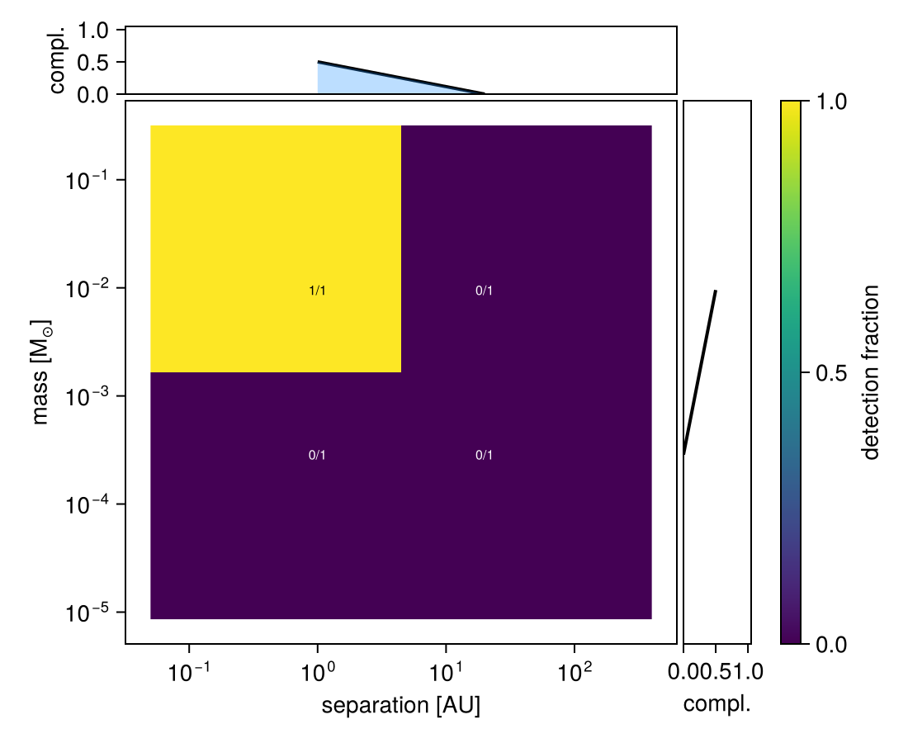
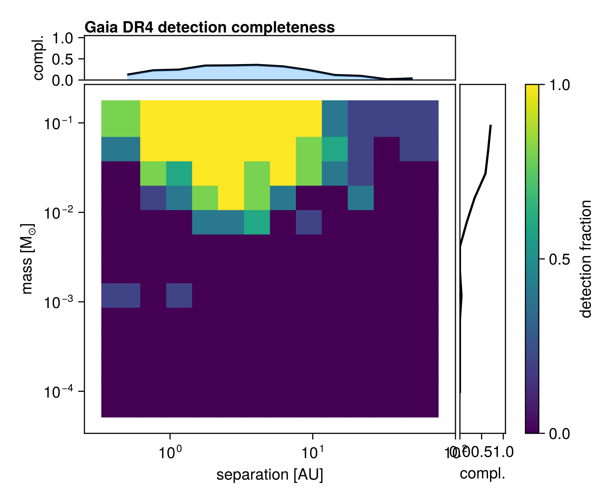

Detection Completeness Mapping
Octofitter includes a framework for computing detection completeness maps via injection-recovery. Given a model template and a grid of companion masses and separations, it systematically injects synthetic companions, simulates observations, fits the data, and tests whether the companion is recovered.
Each trial stores the full posterior chain and the true injected parameters. You choose and apply your detection criterion after sampling, so you can iterate on thresholds without re-running the sampler.
The framework supports both local execution and cluster-scale parallelism via a three-phase workflow:
| Phase | Function | What it does |
|---|---|---|
| 1 | completeness_jobs | Generate lightweight job descriptions |
| 2 | run_completeness_trial | Inject, simulate, and sample (one trial) |
| 3 | assemble_completeness | Apply detection criterion and build map |
For convenience, completeness_map runs all three phases locally.
For efficiency, each trial initializes the sampler at the true injected parameters rather than running blind initialization. This reduces sampling cost for this tutorial but means the completeness estimate is optimistic about convergence. Consider letting them initialize without that hint.
A chain too short to converge gives a wrong answer in either direction, and neither is distinguishable in the map from a real statement about the data. On one trial of the Gaia DR4 example below — a 30 MJup companion at 20 AU, same seed and same simulated data throughout — 500 warmup + 500 sampling steps returned a mass posterior with median 38 MJup and a 5th percentile of 3.9, a confident "detection"; 1000 + 1000 returned median 10 M_Jup with a 5th percentile of 0.1, essentially unconstrained, which is the honest answer for an 89-year period observed over 5.3 years. Shrink the grid when you want a cheaper map, not the chains — and read a few posteriors by hand before trusting a whole map.
A runnable miniature
Before the cluster-scale recipe, here is the whole workflow at a size that finishes in about a minute: a two-body model with stellar reflex radial velocity, a 2 × 2 grid, and one trial per cell.
using Octofitter
using Distributions
using Statistics
using CairoMakie
# The template model. Its data are placeholders -- `run_completeness_trial`
# replaces them with a simulation from the injected parameters, so only the
# epochs and the uncertainties matter here.
epochs = range(56000.0, 58000.0, length=30)
A = Body(name="A", variables=@variables begin
mass ~ truncated(Normal(1.0, 0.05), lower=0.1) # M⊙
end)
b = Body(name="b", about=A, variables=@variables begin
mass ~ LogUniform(0.1mjup, 30mjup) # M⊙
a ~ LogUniform(0.5, 30.0) # AU
e ~ Uniform(0.0, 0.5)
i ~ Sine()
ω ~ Uniform(0, 2pi)
Ω ~ Uniform(0, 2pi)
tp ~ Uniform(55000, 59000)
end)
rvs = RadialVelocityObs(
Table(
epoch = collect(epochs),
rv = zeros(length(epochs)),
σ_rv = fill(10.0, length(epochs)), # m/s
);
target = A, ref = Barycentre, name = "HARPS",
variables=@variables begin
offset ~ Normal(0, 100) # m/s -- declare it; nothing is auto-injected
jitter ~ LogUniform(0.1, 30.0) # m/s
end)
template = System(name="completeness-demo", bodies=[A, b], observations=[rvs],
variables=@variables begin
plx = 25.0
end)[ Info: [completeness-demo] observing_geometry = false (auto): worst accumulated bias 0.0229σ, 4.36× inside the 0.1σ limit — over 300 prior draws (seed 0xc70f177e5000001)
[ Info: [completeness-demo] barycentric_lighttime = false (auto): changes no prediction at all — over 300 prior draws (seed 0xc70f177e5000001)
[ Info: [completeness-demo] "HARPS": Einstein term, peak-to-peak [m/s] ≈ 0.000373 (3.73e-5× its tightest σ = 10.0)
[ Info: [completeness-demo] "HARPS": secular-acceleration drift, peak-to-peak [m/s] ≈ 0.0 (0.0× its tightest σ = 10.0)masses = [0.3mjup, 10mjup] # M⊙
seps = [1.0, 20.0] # AU
@time cmap, results = completeness_map(
template,
model -> octofit(model, iterations=500, adaptation=1000, verbosity=0),
(chain, θ) -> quantile(vec(chain["b_mass"]), 0.05) > 1mjup;
inject = (mass, sep) -> (; bodies=(; b=(; mass=mass, a=sep))),
masses = masses,
separations = seps,
n_trials = 1,
verbosity = 0,
)
cmap.completeness2×2 Matrix{Float64}:
0.0 0.0
1.0 0.0Only the massive, close companion is recovered — a 0.3 M_Jup companion produces a few m/s of reflex motion against a 10 m/s noise floor, and a 20 AU orbit is four times longer than the 2000-day baseline.
completenessplot(cmap, nothing; show_counts=true)
Two things to know about inject:
- Overrides nest under
bodies=, matching the shape of the model. - The values are in the model's own units, so a mass override is in M⊙.
Quick example (local)
using Octofitter, Distributions
# ... (define your system with observation templates) ...
# Run completeness map
cmap, results = completeness_map(
sys,
model -> octofit(model, iterations=5000, verbosity=0), # your sampler
(chain, θ) -> quantile(vec(chain["b_mass"]), 0.05) > 1mjup; # your detection criterion
inject = (mass, sep) -> (; bodies=(; b=(; mass=mass, a=sep))),
masses = 10 .^ range(-1, 2, length=12) .* mjup, # 0.1 to 100 Mjup, expressed in M⊙
separations = 10 .^ range(-0.3, 1.7, length=12), # 0.5 to 50 AU
n_trials = 5, # trials per mass/separation combination
)
# Plot
using CairoMakie
completenessplot(cmap)completeness_map returns both the assembled map and the full results vector, so you can re-apply a different detection criterion without re-sampling.
Choosing a sampler
The sampler argument is any function that takes a LogDensityModel and returns an MCMCChains Chains object. You control the sampler, its settings, and the number of iterations. Some options:
# HMC (fast, good for unimodal posteriors)
sampler = model -> octofit(model, iterations=5000, verbosity=0)
# Lower target acceptance, for bumpier posteriors (e.g. image data)
sampler = model -> octofit(model, 0.6, iterations=5000, adaptation=2000, verbosity=0)
# Pigeons (slower, better for multimodal posteriors)
using Pigeons
sampler = model -> begin
chain, pt = octofit_pigeons(model, n_rounds=8)
chain
endNote the destructuring in the last one: octofit_pigeons returns (; chain, pt), while run_completeness_trial wants a bare Chains, so the sampler function has to return chain and drop pt.
Choosing a detection criterion
The detection_criterion is a function (chain, θ_true) -> Bool that you provide to assemble_completeness. Because it is only applied in the assembly phase, you can experiment with different criteria on the same set of results.
The θ_true argument is the model's own nested parameter structure, so a body's variables live under θ.bodies.<name>.
Here are some example criteria:
Mass recovery — recovered mass within a factor of 3 of the true value:
detection = (chain, θ) -> begin
med = median(vec(chain["b_mass"]))
true_mass = θ.bodies.b.mass
return med > true_mass / 3 && med < true_mass * 3
endCredible interval excludes zero — 95% lower bound on mass exceeds a threshold:
detection = (chain, θ) -> quantile(vec(chain["b_mass"]), 0.05) > 1mjupSpike-and-slab Bayes factor — if your model includes a planet_present ~ Bernoulli(0.5) indicator variable:
detection = (chain, θ) -> begin
p = mean(vec(chain["b_planet_present"]))
BF = p / (1 - p)
return BF > 3
endIterating on thresholds
Since the full chain is stored in each result, you can re-apply different criteria without re-running the sampler:
# Original assembly with BF > 3
cmap_bf3 = assemble_completeness(results,
(chain, θ) -> let p = mean(vec(chain["b_planet_present"])); p/(1-p) > 3 end;
masses=masses, separations=seps,
)
# Stricter: BF > 10
cmap_bf10 = assemble_completeness(results,
(chain, θ) -> let p = mean(vec(chain["b_planet_present"])); p/(1-p) > 10 end;
masses=masses, separations=seps,
)
# Compare
completenessplot(cmap_bf3, "completeness_bf3.png")
completenessplot(cmap_bf10, "completeness_bf10.png")The inject function
The inject argument maps grid values to parameter overrides. It must return a nested NamedTuple that sets free (prior) parameters only — not derived parameters. Overriding a derived variable is an error listing the model's free variables.
# Simple case: mass and semi-major axis are free parameters
inject = (mass, sep) -> (; bodies=(; b=(; mass=mass, a=sep)))
# Spike-and-slab case: also force planet_present=1 during injection
inject = (mass, sep) -> (; bodies=(; b=(; planet_present=1.0, mass_prime=mass, a=sep)))
# System-level variables sit at the top level; observation variables under `observations`
inject = (mass, sep) -> (; bodies=(; b=(; mass=mass, a=sep)),
observations=(; GPI=(; jitter=1.0)))Overrides are located by exact slot lookup in the flat parameter vector rather than by searching for a matching value, so two parameters that happen to draw the same number, or one element of a vector-valued prior, are addressed correctly.
Gaia DR4 example
examples/completeness_dr4/ is this workflow at cluster scale, against simulated Gaia DR4 epoch astrometry of a real star: Gaia DR3 source 5064625130502952704, at G = 6.94, whose DR4 scan window holds 191 forecast field-of-view transits over 5.3 years.
| file | role |
|---|---|
common.jl | the target, the grid, the template model, inject, and the detection criterion — everything the entry points share |
setup.jl | queries DR3, GOST and the G23H noise calibration once and caches them to CSV |
run_local.jl | the whole workflow in one process; OCTO_COMPLETENESS_QUICK=1 cuts it to a 2 × 2 smoke test |
completeness_trial.jl | one SLURM array element |
assemble_results.jl | phase 3 — apply the criterion, draw the map, re-threshold |
setup_env.sh, submit.sh | the cluster wiring |
Neither the scan geometry nor the noise is invented. The transits come from GOST and the per-transit uncertainty from this source's measured G23H calibration, via gaia_dr4_transit_template and g23h_scan_uncertainty; see Simulating and Fitting Gaia DR4 Data for what each term means. For this star:
| quantity | value |
|---|---|
σ_AL, σ_att — per CCD observation, independent | 0.058, 0.078 mas |
σ_formal = √(σAL² + σatt²) — per CCD | 0.097 mas |
n_ccd — CCD observations per transit | 8.82 |
σ_transit_formal = σ_formal/√n_ccd | 0.033 mas |
σ_calib — per transit, shared, not in Gaia's formal errors | 0.149 mas |
σ_transit_true — the actual per-transit scatter | 0.153 mas |
Gaia publishes one abscissa per transit, so the simulation is at transit level and σ_transit_true is what both the simulated scatter and the likelihood's error bar are set to.

The map above was computed with the full 12 × 12 × 5-trial grid in examples/completeness_dr4/, using this star's calibrated per-transit noise (σtransittrue = 0.153 mas). With five injection trials per cell, individual cells carry ±1-trial noise; smooth contours need more trials per cell.
The shape follows the physics:
- Peak sensitivity at 1–5 AU for massive companions, where the astrometric signal is largest relative to the DR4 time baseline (~5.3 years for this star)
- Sensitivity drops beyond ~10 AU — orbital periods exceed the DR4 baseline, so only a partial arc is observed, and mass trades off against period
- A mass threshold that scales with the noise: the detection floor moves roughly in proportion to σ per transit, so quote it only from a map generated with the σ of the star you care about
Cluster-scale workflow
For large grids or many trials, use the three-phase API with SLURM array jobs. The sketch below is the shape of it; examples/completeness_dr4/ is a complete, runnable version of the same thing.
Phase 1: Generate jobs (head node)
jobs = completeness_jobs(
masses = 10 .^ range(-1, 2, length=15) .* mjup, # M⊙
separations = 10 .^ range(-0.3, 1.7, length=15),
n_trials = 10,
)
# 15 × 15 × 10 = 2250 independent jobsPhase 2: Trial script (one per array task)
# completeness_trial.jl — called by SLURM with SLURM_ARRAY_TASK_ID
using Octofitter, Distributions, Serialization
# ... (define your system template) ...
jobs = completeness_jobs(masses=MASSES, separations=SEPARATIONS, n_trials=N_TRIALS)
job = jobs[parse(Int, ENV["SLURM_ARRAY_TASK_ID"])]
result = run_completeness_trial(
job, sys,
model -> octofit(model, iterations=5000, verbosity=0);
inject = (mass, sep) -> (; bodies=(; b=(; mass=mass, a=sep))),
)
serialize("results/trial_$(lpad(ENV["SLURM_ARRAY_TASK_ID"], 4, '0')).jls", result)SLURM submission script
#!/bin/bash
#SBATCH --array=1-2250
#SBATCH --time=01:00:00
#SBATCH --mem=8G
#SBATCH --cpus-per-task=4
module load julia
julia --project=. --threads=4 completeness_trial.jlPhase 3: Assemble results (head node)
using Octofitter, Serialization, CairoMakie
results = [deserialize(f) for f in readdir("results", join=true) if endswith(f, ".jls")]
# Apply detection criterion — try different thresholds!
cmap = assemble_completeness(results,
(chain, θ) -> quantile(vec(chain["b_mass"]), 0.05) > 1mjup;
masses=MASSES, separations=SEPARATIONS,
)
completenessplot(cmap, "completeness_map.png")Missing (e.g. timed out) trials are simply absent from the results — assemble_completeness handles incomplete grids gracefully, but beware these trials may not be missing at random.
assemble_completeness reports completeness = 0.0 for cells with zero trials, which is indistinguishable from a cell where nothing was recovered. n_total carries the distinction; mask on n_total == 0 rather than trusting the completeness value there.
Visualization
using CairoMakie
# Basic plot
completenessplot(cmap, "map.png")
# With detection counts overlaid
completenessplot(cmap, "map_counts.png"; show_counts=true)
# Pass `nothing` as the filename to skip saving and just return the figure
fig = completenessplot(cmap, nothing)
# Customized
fig = Figure(size=(700, 500))
completenessplot!(fig.layout, cmap;
title="My Target — Gaia DR4 Sensitivity",
colormap=Makie.cgrad(:inferno),
)
Makie.save("map_custom.png", fig, px_per_unit=3)The default y-axis label is mass [M⊙], matching the single mass unit used throughout.